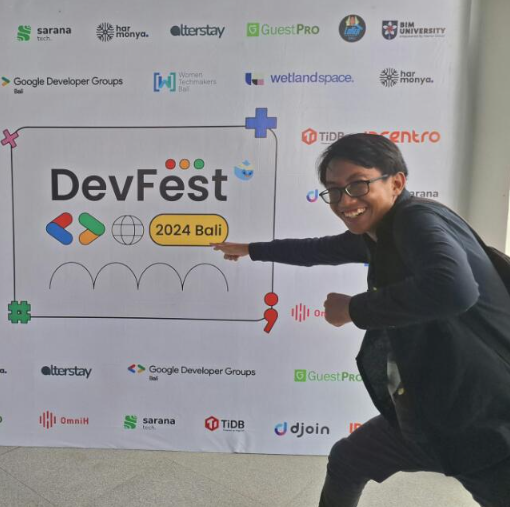

I Kadek Wira Agus Setiawan
Backend Developer di Sinar Teknologi Indonesia
Mahasiswa Ilmu Komputer Universitas Pendidikan Ganesha yang sedang menjalani program magang. Fokus utama saya selama di Sinar Teknologi Indonesia adalah membantu dalam Pengambangan Website Money Changer dan Management Apotek sebagai Backend Developer.